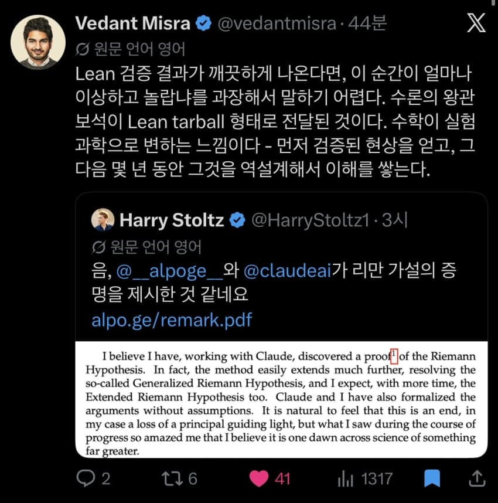
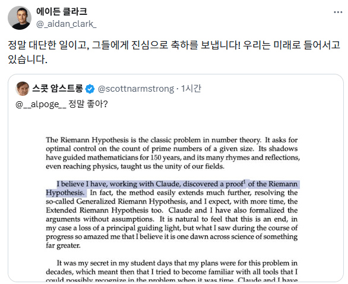
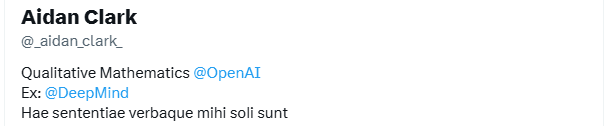
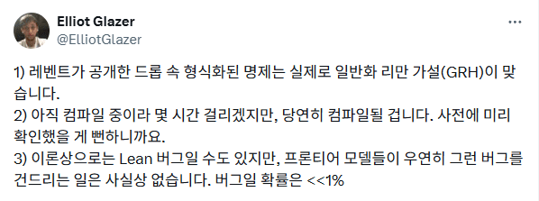
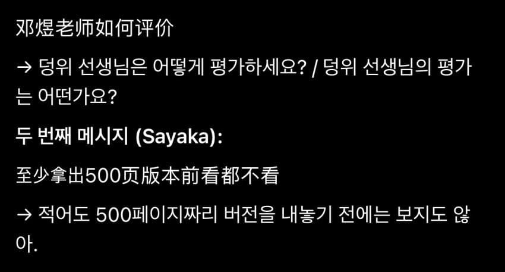

학력: 컬럼비아대 물리·수학·경제학 전공(Rabi Scholar)
이전: AI 스타트업 Kemvi 창업 후 HubSpot에 매각, HubSpot ML Labs, OpenAI 추론/알고리즘 리드
현재: 구글 딥마인드 연구원, Gemini 코어팀
업무: 추론(Reasoning) 연구
대표작: PaLM 참여, 논문 피인용 3.6만 회. 창업 엑시트에 빅테크 3사까지 다 거친 사람


학력: UC 버클리 학사(컴퓨터과학·수학·고전어 전공, 2013~2017)
이전: 딥마인드 스태프 리서치 엔지니어
현재: OpenAI 연구 부사장(VP of Research, 트레이닝)
업무: OpenAI 모델 학습 총괄
대표작: LLM 크기와 학습 데이터를 컴퓨트에 맞춰 어떻게 키울지 정리한 친칠라 논문 공저자로, AI 스케일링의 교과서를 쓴 사람 중 하나

학력: 하버드 수학 박사(지도교수 휴 우딘, 집합론·형식 체계 연구)
현재: Epoch AI 수석 수학자(Lead Mathematician)
업무: AI 수학 벤치마크 FrontierMath 프로젝트 총괄
대표작: FrontierMath 논문 제1저자. 이 벤치마크는 출시 당시 최신 AI 모델들이 2%도 못 풀었던 'AI 수학 능력 최종 시험'

2026년 필즈상 공동 수상자 덩위
현재: 시카고대 수학과 교수
학력: MIT 수학 학사(2011), 2010년 퍼트넘 펠로(북미 대학생 수학경시 최상위), 프린스턴 수학 박사(2015, 지도교수 알렉산드루 이오네스쿠)
앤트로픽 레벤트 알푀게, 리만가설 증명 주장
https://m.dcinside.com/board/thesingularity/1544641
증명의 증명의 증명을 하는거임